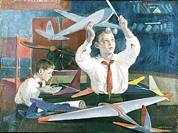
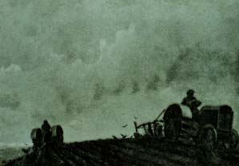
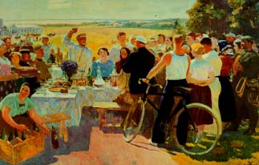
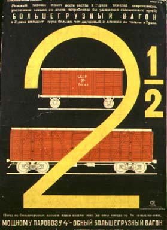
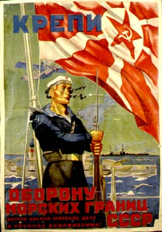

Page index / courses
1930-1940
Images Of Socialist Realism:

- B. E. Vladimirisky (1930s)

- Alexander Gerasimov "Black Earth" (1930)

-Sergei Gerasimov "Collective Farm Harvest Festival" (1937)
Click here for a definition of socialist realism
Repression and terror:
The murder of Sergei Kirov (December 1934)
Internal workings of the Soviet System
Collectivization and Industrialization
Collectivization in Smolensk
More about Collectivization and industrialization
Link to Russian literature related to the gulag

-Bulanov (1932)
The Stalin Constitution (1936)
The Great Terror

- (1930s)